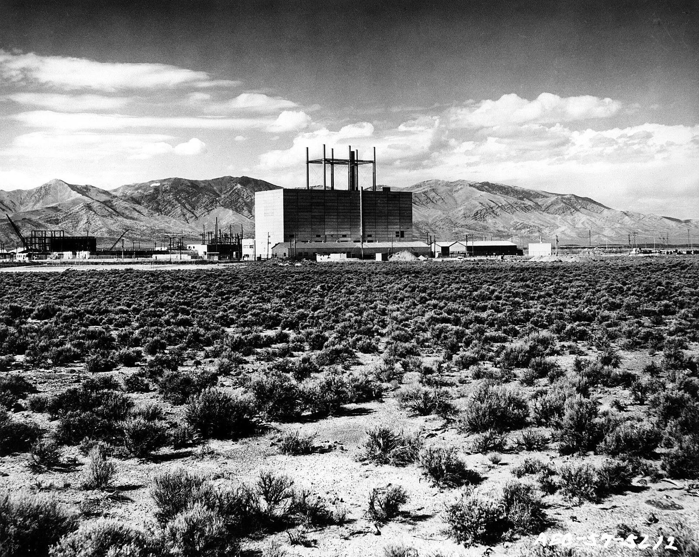
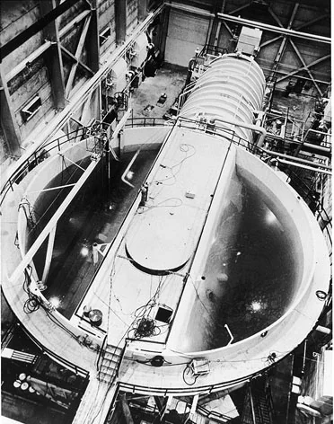
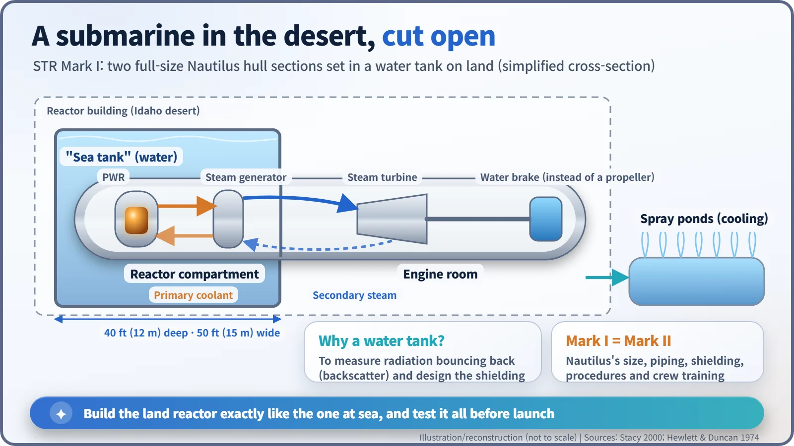

Nuclear History · 153
The Ship That Crossed the Atlantic Without Leaving Idaho — the STR Mark I Submarine Prototype (1953)
Two Nautilus hull sections in a tank of water, a chart on the control-room wall, and a hundred hours that proved a submarine reactor could work.
Before the US Navy put a reactor into USS Nautilus, it built the same plant on dry land in the Idaho desert: the STR Mark I, a full-size replica of two submarine hull sections standing in a tank of water. It went critical at 11:17 p.m. on 30 March 1953, and in June it "crossed the Atlantic" in a continuous run of about 100 hours, plotted watch by watch on a chart, proving that a submarine reactor could deliver steady, practical power.
A crossing without water
This ship never once went to sea, yet it crossed the Atlantic. In late June 1953, in the high desert of Idaho, hundreds of miles from the nearest ocean, a chart of the North Atlantic hung on a control-room wall inside a plain sheet-metal building. At the end of every four-hour watch, the officers marked where their "ship" had got to.
The ship was the STR Mark I (Submarine Thermal Reactor), the land-based prototype of the reactor that would drive USS Nautilus, the world's first nuclear-powered submarine. Before anyone put a reactor in a hull at sea, the US Navy built one, full size, in the desert.

"Whoever builds it first will rule the oceans"
A diesel-electric submarine needs air to run its engines, so it has to come up often. A reactor makes heat without oxygen, which is why it promised a true submarine. The officer leading the Navy's nuclear effort, Captain Hyman G. Rickover (1900–1986), was in a hurry. "The nation that first develops nuclear engines will rule the oceans of the world; our enemies are working on such engines; we must be first," he said, as the Idaho laboratory's official history quotes him. [2]
New technology normally climbs a ladder: prove the principle, build a small prototype, then a demonstration plant, then the real thing. Rickover skipped rungs. He ordered a full-scale prototype and the submarine itself to be built at the same time. Westinghouse's Bettis Atomic Power Laboratory in Pittsburgh designed the plant, Electric Boat was responsible for building it on site, and the site was the Naval Reactors Facility at the National Reactor Testing Station near Arco, Idaho (today's Idaho National Laboratory). Construction began in August 1950, then stalled until spring when an unusually cold winter set in. [1]
"Mark I equals Mark II", and no coffee maker
Rickover's slogan was "Mark I equals Mark II." The land prototype (Mark I) and the reactor for Nautilus (Mark II) were to be so alike that any fix made in Idaho would automatically carry over to the boat. (In practice Mark II also picked up improvements, so it was not an exact copy.) The reactor was therefore housed in a full-size replica of two Nautilus hull sections, the reactor compartment and the engine room, matching the boat in dimensions, piping, shielding, maintenance routines and crew training. Only part of the after end was mocked up in wood. [1]
A story often told makes the point. On one inspection Rickover spotted a coffee maker by a bulkhead. "Get it out of here," he is said to have ordered. "You know the rules. Move it outside the hull." If it would not be on the submarine, it did not belong in the prototype.
The reactor-compartment end of the hull sat in a "sea tank" of water about 40 feet (12 m) deep and 50 feet (15 m) across, at first nicknamed "McGaraghan's Sea" after the Navy's officer on site, Commander Jack McGaraghan. It was not there for show. Shielding specialists used it to measure backscatter: radiation that escapes the hull, bounces off water and comes back in towards the crew. Those measurements shaped the shielding of the real Nautilus. [2]

A reactor that keeps its water from boiling
The principle is the one used in today's pressurized water reactors. Like water in a pressure cooker, water held at high pressure can be heated far past its normal boiling point without boiling. This primary coolant carries heat from the core to a steam generator, where it boils water in a separate secondary loop; that steam spins the turbine. The water also slows down neutrons, so it is both coolant and moderator. In Idaho a water brake stood in for the propeller, loading the shaft, and spray ponds outside the building got rid of the surplus heat. [3]

11:17 p.m., and then a hundred hours
At 11:17 p.m. on 30 March 1953 the Mark I went critical: its chain reaction became self-sustaining. As planned, the power was less than a hundredth of a horsepower, enough only for physics and shielding data. On 31 May, Atomic Energy Commissioner Thomas E. Murray opened the throttle that sent nuclear-generated steam into the turbine for the first time. [1]
Power was raised in 5 percent steps. On 25 June, on his way to the site, Rickover learned that the full-power test had been cut to 24 hours and overruled it: the plant would run for 100 hours. He brushed aside every objection and, that night on a cot in a Quonset hut, came up with the idea of the chart.
Around the sixtieth hour, trouble piled up. Motor generators misbehaved, the nuclear instruments turned erratic and a large reactor coolant pump began making strange noises. The site asked to shut down. Rickover, back in Washington, took full responsibility and refused every request. According to the Navy's official history, those who wanted to stop were worried about damaging steam-plant equipment, not about reactor safety, and the reactor was running well. When the plot on the chart showed that the "ship" had reached Ireland, the operators shut the plant down by the book. [1]
Sources differ slightly on the details. The Department of Energy's official history and the Naval Reactors History Association give about 100 hours; an Idaho National Laboratory account gives 96. The imagined starting point is either the US East Coast or Newfoundland. [3]
![Schematic North Atlantic chart with North America on the left and Ireland on the right; a dashed track of small circles, one per four-hour watch, runs from 0 hours to Ireland, blue until hour 60 and red afterwards, with a note that around hour 60 generators, instruments and a coolant pump acted up but Rickover would not stop; below, a timeline: August 1950 construction, 30 March 1953 first criticality at 11:17 p.m., 31 May 1953 first nuclear steam to the turbine, June 1953 simulated crossing, January 1954 Nautilus launched, October 1989 final shutdown, 2025 demolition complete](../../assets/images/history/153-str-mark-1-prototype/fig2-atlantic-run.webp)
Thirty-six years in the desert
What mattered most was where the trouble had come from. It was all in the steam plant and mechanical equipment; the control-rod drives and the nuclear components, which had caused so much anxiety, worked well. The official history calls the Mark I "the world's first fully-engineered nuclear reactor capable of producing practical amounts of energy on a sustained and reliable basis." Nautilus was launched in January 1954 on the strength of that record. [1]
Renamed S1W under the Navy's designation system, the prototype then became a school. Rickover required nuclear sailors to qualify on a land-based plant before going to sea, and generations of them stood watch inside this hull. In the mid-1960s it received a larger core; it shut down for good in October 1989. Demolition was completed in 2025, and the Department of Energy reported that the site lay bare for the first time in nearly 75 years. The pressurized-water technology refined there went on to shape commercial nuclear power as well. [4] [5]
Land before sea. Building it all once more, full size, on dry ground became one of the basic habits of nuclear engineering.